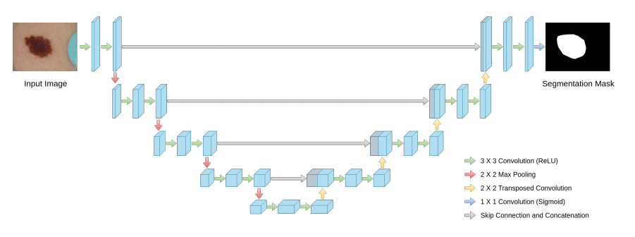
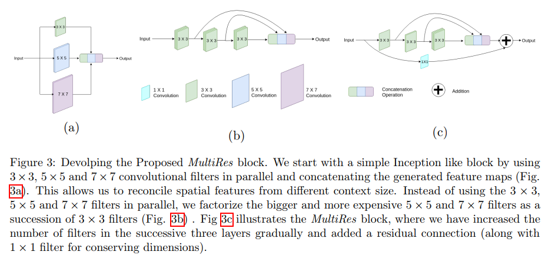
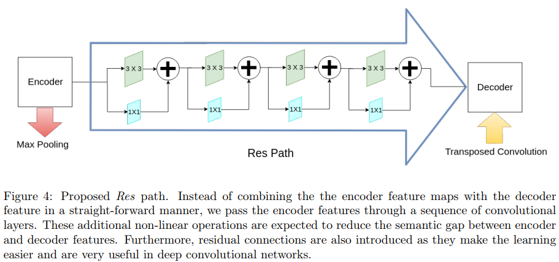
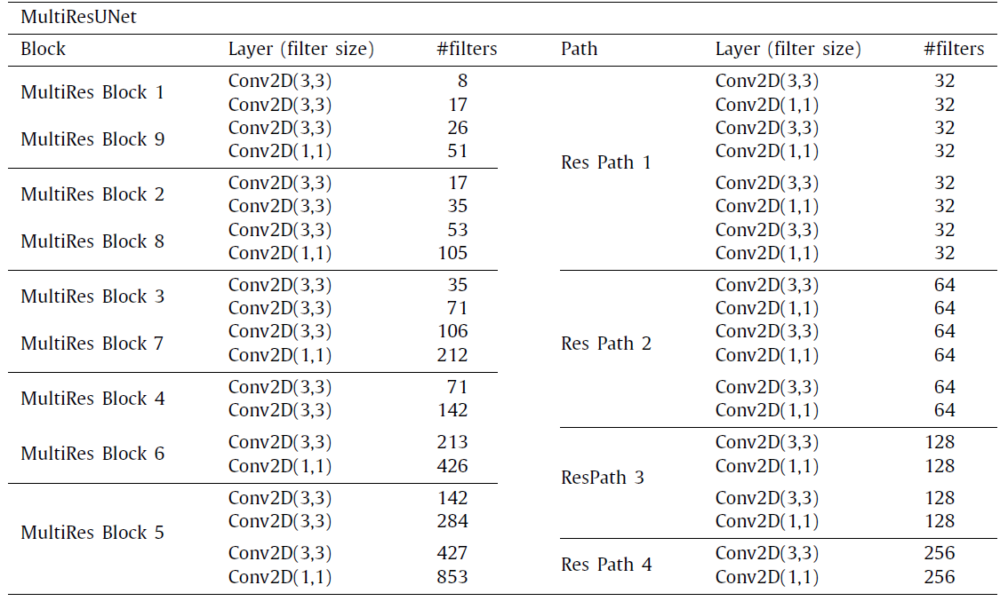

MultiResUNet : Rethinking the U-Net Architecture for Multimodal Biomedical Image Segmentation¶
Review By: Taeyup Song (가짜연구소 논문미식회 2기)
Edited by: Taeyup Song
Resource¶
Conventional Method: U-Net¶

semantic segmentation에 주로 사용되는 encoder-decoder structure에 skip-connection 적용
Pooling layer에서 소실되는 spatial info.를 retrieve해줌
Proposed Method¶
1. U-Net 구조 개선¶

medical imaging 분야에서 잘 쓰이던 U-Net을 최신 architecture를 적용해서 개선
Multi-resolution analysis (figure a) → inception-like block을 도입 → stride conv.를 적용할 수 있으나 U-Net archi에 의해 효과가 없었음. → memory를 너무 낭비함.
5x5, 7x7 conv를 3x3의 조합으로 구성. (figure b) → 그래도 memory를 많이 씀 → conv가 2개가 연결되면 memory는 quadratic effect를 줌 (제곱이 됨?)
2구조에 skip-connection 적용 (MultiRes block)
2. Probable Semantic Gap between the Corresponding Levels of Encoder-Decoder¶
U-net에서 encoder의 처음 layer 정보는 decoder의 마지막 layer로 전달됨.
이 과정에서 발생할 수 있는 spatial information loss를 줄이기 위해 추가적인 non-linear transformation이 필요하며, residual connection이 포함된 conv layer(ResPath)를 추가하여 학습을 쉽게 할수도 있음. [33, 39]
논문에서는 3x3 conv 사용

3. Proposed Architecture¶
각 block 내의 convolutional layer filter 수를 기존 U-Net와 유사하게 control 하기 위해 W parameter를 도입
\(U\) is the # of filters in the corresponding layer of the U-Net \(\alpha\) is a scalar coefficient.
논문에서는 \(\alpha=1.67\)적용
